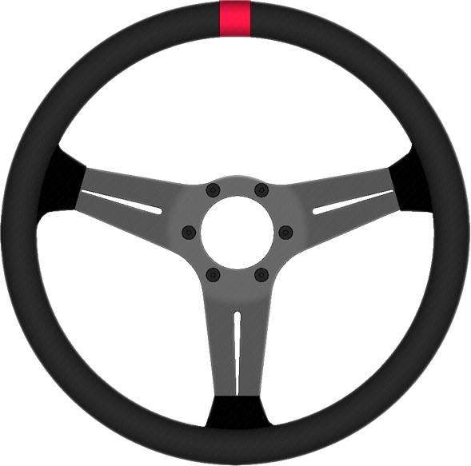

Principal
Ângulo540°
0°

Bruto: —Calibrado: —Convertido: —
Force Feedback
Ganhos e batentes · limites ajustados manualmente.
Efeito fora do jogoDesligado
Câmbio
Movimento X/Y · configure cada marcha
Registrar marcha
Y maxY min
X : —Y : —
X min X max
Faixa capturada
Engate cada marcha e clique no botão correspondente em Registrar marcha.
Configurações
Encoder incremental
CPR = pulsos por volta (PPR) × 4.
Multiplique por 4 os pulsos por volta informados pelo fabricante.
Exemplo: 400 PPR × 4 = 1600 CPR.
Se a ficha técnica já informar as contagens após ×4, use esse valor diretamente. Salve para aplicar ao volante.
Ponte H e PWM
ModeloBTS7960
Centralizar por atalho
Nenhum atalho definido
Escolha uma tecla, combinação ou botão do Malth Pro. Funciona com o jogo aberto e o Malth Pro em execução.
Aparência
Imagem do volante
Imagem original · PNG de até 2 MB